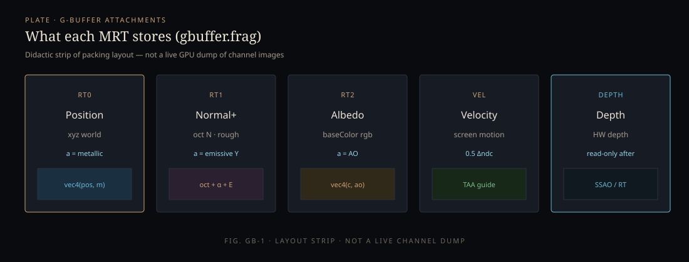
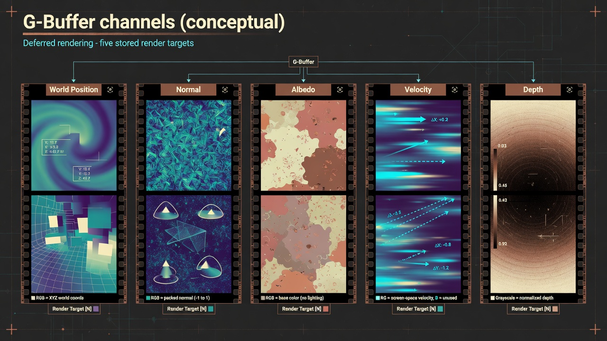

Monograph · 05 · Deferred
Pipelines · deep dive
Deferred raster
Walk one deferred frame as DeferredRenderer::render actually builds it: jitter, render graph, hybrid inject, lighting, post. Plus what the GBuffer stores and why.
Plates

MRT packing layout (didactic — not a live channel dump).

Conceptual illustration — not engine output
Host wiring (before the graph)
VulkanRenderer::renderDeferred prepares the child every frame:
- Wait ring fence; copy staging → CPU pixel buffer
setScene, camera view/proj/pos on DeferredRenderer- If RT AS live → enable hybrid shadow path; pass TLAS pointer
- Pass env map view/sampler for IBL
- Pass VB/IB + meshBufferMap
updateLightBuffer; optional sky/sun direction blend into fallback directional- Begin command buffer →
deferredRenderer->render(cmd, frameIndex) - Copy final HDR/LDR output to staging; submit; advance frame
Pass graph (inside DeferredRenderer::render)
- TAA: fetch jitter; build jittered projection for GBuffer only
- Update pass uniforms (scene, light dir, camera, invViewProj)
m_renderGraph.reset()then add passes with resource declarations- CSM — cascade depth from unjittered camera (stable shadows)
- GBuffer — MRT + depth; finalLayout shader-read for colors
- SSAO — then bind result into lighting
- If TLAS instances > 0: RT shadow compute/trace pass (pos/normal/depth)
- If TLAS: RT GI (+ albedo)
- Deferred lighting — PBR + shadows + IBL + RT inputs
- Sky, optional SSS/SSR, bloom/TAA/tonemap post stack
- Optional GPU timestamp queries around passes
TAA needs sub-pixel phase in the color history. Cascaded shadows that jitter every frame shimmer. Split the projections.
OHAO’s graph declares image reads/writes so barriers can be inserted between passes. Each pass still owns its VkRenderPass/framebuffer — hybrid of modern graph + classic Vulkan objects.
GBuffer write path
Vertex: skinned or static; push constants carry model, viewProj, prevMVP, material params, albedo, emissive indices. Fragment (gbuffer.frag):
- Sample albedo bindless if index valid
- Optional normal map via TBN
- ORM: ao*=R, rough*=G, metal*=B; rough = max(rough, 0.04)
- out0 = (worldPos, metallic); out1 = (octNormal, rough, emissiveY); out2 = (albedo, ao)
- velocity = 0.5 * (ndc_curr − ndc_prev)
Lighting consume path
deferred_lighting.frag reconstructs surface from GBuffer, loops lights (UBO, max 8), evaluates BRDF (Ch. 04), applies CSM and optional RT visibility, multiplies SSAO, adds IBL (equirect LOD ≈ 9·roughness) with analytical BRDF-LUT fallback when the real LUT is zeroed — so chrome is not pure black when only setEnvMap was used.
Limits
No multi-bounce room GI in pure deferred. Hybrid RT is a sparse inject, not full PT. SSS/SSR experimental. See Status.
deferred_renderer.cppGraph + injectgbuffer_pass.* / gbuffer.fragMRTcsm_pass.*Cascadesdeferred_lighting_pass.*PBR + IBLpost_processing_pipeline.*SSAO bloom TAArender/graph/*Barriersrender_dispatch.cppHost frameDesign units in this module
Each card is a focused design page (what / how / why + sources). Full tree: Sitemap.
DeferredRenderer orchestrator
Pass ownership, resize, setScene, graph execute.
RenderPassBase
Shared init/cleanup/shader path helpers for passes.
GBuffer pass
MRT packing, bindless, velocity, push constants.
CSM shadows
Cascade split, depth array, unjittered camera.
Deferred lighting
Light loop, IBL, SSAO bind, BRDF eval.
SSAO
Screen-space AO pass + compute path.
SSR & SSS
Experimental reflections and subsurface blur.
Sky pass
HDR sky / atmosphere composite into lighting output.
Post stack
Bloom, TAA, tonemap orchestration.
Gizmo pass
Debug/editor overlay meshes.